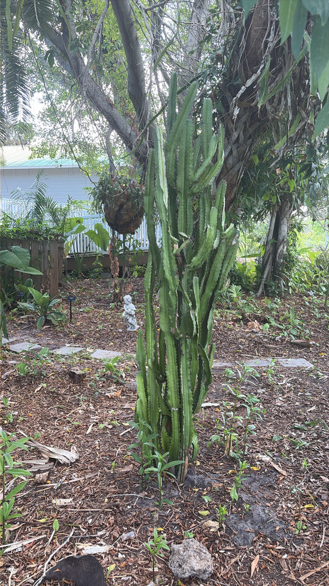

- It looks exactly like a cactus — three-sided stems, paired spines, columnar silhouette — but it is not one. Cacti are exclusively from the Americas; this plant is from central Africa and belongs to an entirely different family. The resemblance is a textbook case of convergent evolution.
- The white sap is not milk — it is latex, and it is caustic. It contains diterpene esters (including ingenol and phorbol-type compounds) that cause burning and blistering on skin contact; eye contact is a medical emergency that can cause temporary or permanent vision loss. Every part of this plant that bleeds white should be treated with respect.
- It rarely blooms in cultivation at all. When it does, the flowers are tiny yellowish-green structures called cyathia — technically not individual flowers but a cluster of male flowers surrounding a single female, all wrapped in a modified leaf cup. In the wild, flowering may not occur until a plant is decades old.
- In parts of central Africa, the plant has a long history of traditional medicinal use: leaf poultices for boils, sap treatments for earaches, and applications for muscle swelling. Given the same sap's well-documented toxicity, none of these uses should be attempted without expert guidance.
Native to the seasonally dry tropical forests of central Africa — specifically Angola, Congo, Gabon, Malawi, and Zaire — where it grows in hot, arid conditions and stores water in its fleshy stems to survive long dry seasons.
It has been widely introduced around the world as an ornamental and houseplant, and has naturalized in some warm climates including Cuba and India, forming dense thickets in disturbed sites. In Florida it is grown as a landscape specimen and container plant, valued for its bold architectural form; it is not native to the state and has no wild presence in Florida's natural areas.
- Despite its common name, the African Milk Tree is not a tree, not related to cacti, and its 'milk' is anything but benign. It is a succulent shrub in the family Euphorbiaceae — the spurge family — which also includes poinsettias, cassava, and the pencil cactus.
- The columnar, three-sided stems and paired spines make it a convincing cactus impersonator, but a close look reveals the key difference: the spines are not produced from areoles, the round cushion-like structures that are the defining hallmark of true cacti.
- The name trigona is Latin for 'three-angled,' a direct reference to the plant's distinctly triangular stem cross-section. Branches are sharply three-sided and ascending, pressed close to the main stem in the plant's characteristic candelabra silhouette.
- Stems are dark green with pale V-shaped mottling along the ridges, and small teardrop-shaped leaves sprout from the ridge edges — but those leaves are not permanent. They drop seasonally, and the plant carries on perfectly well without them, relying on its green stems for photosynthesis.
- The genus Euphorbia is one of the largest and most ecologically diverse plant genera on earth, with roughly 2,000 species ranging from tiny annuals to large trees. What unites them is the cyathium — the genus's unique flower structure, a cup-shaped involucre that packages male and female flowers together into a single functional unit that mimics a single bloom. In E. trigona, these structures are tiny, yellowish-green, and rarely produced in cultivation. Blooming is generally reported only in large, mature outdoor specimens under high light and after a period of drought stress. The contrast with a true cactus flower is stark: cactus blooms are large, showy, and immediately recognizable — many petals, many stamens, vivid color, growing directly from an areole.
- The Euphorbia hides its radically reduced flowers inside a deceptive cup, with no petals at all; what can look like color are modified bracts or nectar glands, never true petals. Same arid habitat pressures, two completely different evolutionary solutions to the problem of reproduction.
In its central African native habitat, Euphorbia trigona's cyathia provide nectar to pollinators when the plant does flower. In Florida cultivation, however, it rarely blooms, limiting its direct pollinator value.
Its dense, spiny stems can offer incidental cover for lizards and small wildlife in landscape settings, but it is not considered a significant wildlife plant in Florida — a meaningful contrast to the native species surrounding it in the park.
Primarily vegetative. Stem cuttings root readily and are the standard method of propagation in cultivation. Seeds are rarely produced outside the native range. In the wild, stem fragments that fall and contact soil can establish new plants, which contributes to the plant's ability to spread in warm climates where it has naturalized.
The main trunk is stout and cylindrical, greying with age; branches are distinctly three-angled (trigonal), ascending, and appressed to the central stem in a candelabra form. Stem ridges bear paired spines roughly 4 mm long, set on spine shields spaced about 1 cm apart along each ridge edge.
Small, teardrop-shaped leaves, 2 to 4 inches long, grow from the stem ridges between the spines. They are not permanent — leaves drop seasonally and the green stems carry on photosynthesis independently.
Flowers are cyathia — the characteristic Euphorbia inflorescence — tiny cup-shaped structures that enclose a single female flower surrounded by male flowers within a modified leaf cup (involucre). In E. trigona, cyathia are small, yellowish-green, and appear along the stem ridges.
Blooming is rare in cultivation; outdoor specimens in warm climates may flower in late spring or summer after drought stress.
Any wound to the stem releases a copious milky-white latex sap. This sap is caustic — it causes skin burning and blistering on contact and is a medical emergency if it reaches the eyes. Gloves and eye protection are mandatory when pruning or handling cut stems.
Start with the stem shape: look straight down at the top of a branch and you will see a distinct triangle — three angles, three ridges, three flat faces. That geometry is the plant's name in Latin. Run your eye down a ridge and you will find paired spines, set roughly 1 cm apart, with a small teardrop leaf poking out between each pair — or just an empty notch where one has dropped.
The main trunk is thicker and more cylindrical, greying with age, while the branches remain bright green with pale V-shaped mottling.
The overall silhouette is a candelabra: branches rising parallel to the central stem, all reaching upward together.
Do not eat any part of this plant, and handle it with real care. Every part carries a milky latex loaded with caustic diterpene esters that is highly hazardous to people and animals.
Always wear nitrile gloves and eye protection when pruning.
Skin contact causes immediate irritation, burning, and severe blistering — wash the area thoroughly with soap and water right away.
Eye contact is a medical emergency: the latex can cause severe inflammation and temporary or permanent blindness.
Flush the eye with large amounts of water for at least 15 minutes and seek urgent medical attention.
Swallowing it causes intense oral burning, heavy drooling, vomiting, and severe digestive distress.
It's highly toxic to dogs, cats, and horses too — keep pets completely away from freshly cut or damaged stems, and contact your vet immediately if exposure is suspected.
FAMILY: Euphorbiaceae (the spurge family) — one of the largest flowering plant families, encompassing over 8,000 species worldwide, including poinsettias (*Euphorbia pulcherrima*), cassava (*Manihot esculenta*), and rubber tree (*Hevea brasiliensis*).
CULTIVARS: The cultivar 'Rubra' (sometimes sold as 'Royal Red') develops stems and leaves with pronounced red or burgundy coloration, especially on new growth and in high-light conditions. It grows to similar dimensions as the green form and has the same cultural requirements and toxicity profile.
NAME NOTE: Despite the common name 'African Milk Tree,' this plant is botanically a shrub, not a tree, and its 'milk' is a caustic latex — not remotely edible. The name reflects vernacular tradition rather than botanical precision.


- © Ruby Meador (CC-BY-NC), via iNaturalist
- © Randall Carter (CC-BY-NC), via iNaturalist